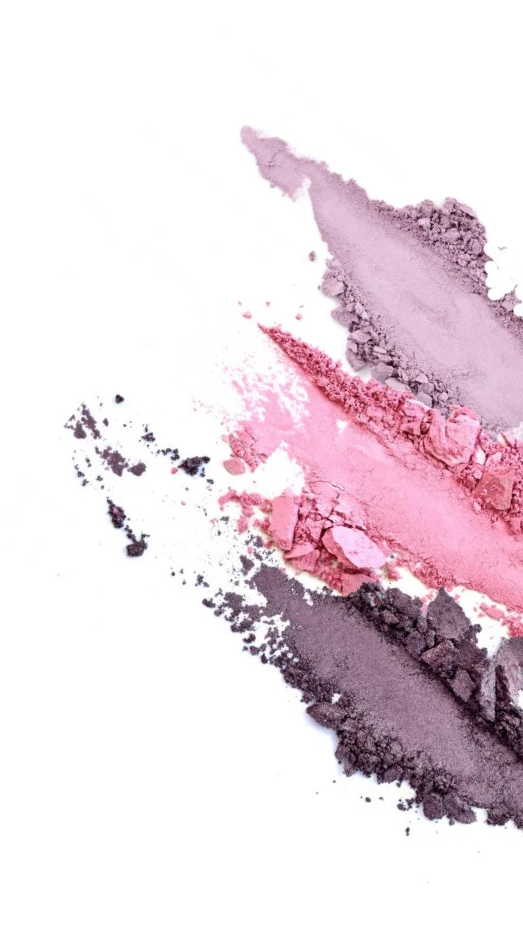
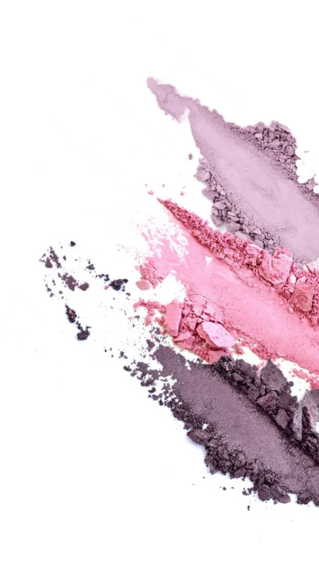

Stratila 45 kg! Adele zdieľala svoju novú fotografiu a povedala tajomstvo jej transformácia


5. mája, slávna speváčka a víťazka 15 Grammy, Oscara a Zlatý glóbus, Adele oslávila 32. narodeniny. V poslednej dobe sa speváčka neobjavila na verejnosti a ani príliš často neaktualizovala svoj Instagram.Nedávno sa však objavila na sociálnych sieťach, aby poďakovala ľuďom za napísanie jej vrelých prianie k narodeninám, spolu s fotografiou vďaka ktorej jej fanúšikovia šokovali.
Takto vyzerala Adele v roku 2013, počas 85. výročnej ceny "Oscar"

Vtedy sa speváčka tiež vyzerala roztomilá. Všetci boli zvyknutí na jej vzhľad, ale podľa jej priznania bola sama veľmi nepríjemná mať takú váhu. Na začiatku svojej kariéry vážila 132 kg, ale postupom času sa jej to trochu podarilo zhubnout, však úplne zbaviť nadváhu ona nemohla.
A tak v roku 2019, po rozvode so Simonom Konekim, začala Adele schudnúť a jej fanúšikovia si začali všímať .
Dnes speváčka sa úplne zmenila a ukázala, ako vyzerá teraz, zverejnením novej fotografie k narodeninám.
Ako Adele vyzerá teraz:

Nielen schudla ale aj mladší najmenej o 10 rokov! Fanúšikovia si všimli, jej úžasné transformácie a sa začali zaujímať, ako sa jej podarilo v tak krátkej dobe schudnúť!
Adele neignorovala otázky svojich fanúšikov a odpovedala na ne v budúcom príspevku. To je to, čo napísala:
"Nikdy som nemala komplexy s nadváhou . Začala som si však všímať, že sa môj zdravotný stav zhoršil, objavila sa dýchavičnosť a uvedomila som si, že je potrebné niečo zmeniť ... Chcem byť zdravá pre svojho syna.
Začala som intenzívnym tréningom na simulátoroch, zmenila som stravu, vzdala sa zlých návykov, mala malý účinok. To nie je výsledok, na ktorý som čakala. ”
Zhruba v rovnakom čase, Adele objednala Slimagic kapky už sme o nich hovorili!! SLIMAGIC – prírodný prípravok pre spaľovanie viscerálneho (hlbokého) a podkožného tuku, má zložitý účinok na telo, nasýtený vitamíny a minerály. Rastlinný koncentrát nasycuje telo vitamínmi A, E, skupina B, stimuluje aktívne spaľovanie tukov bez poškodenia zdravia. Odstraňuje celulitidové útvary na bokoch, bruchu a pažiach už v 2. týždni používania. Nebudete musieť dodržiavať diétu, môžete dokonca piť červené víno a jesť horkú čokoládu.

V minulom roku speváčka Grammy sa rozhodla schudnúť sa Slimagic. Výsledky šokovali jej fanúšikov. Jej podarilo stratiť 45 kg iba za 3 mesiace iba za 3 mesiace a teraz vyzerá skvele!
Tu je to, čo napísala vo svojich sociálnych sieťach:
“ Najdôležitejšia vec pri chudnutí - Uistite sa, že nedošlo k poškodeniu vášho tela. Bohužiaľ, najobľúbenejší metódy chudnutia to robia. Nemôžete sedieť na diéte po celú dobu, a nie každý to vydrží. Keď nedosiahli svoj cieľ, ľudia sa obracajú na prášky, z ktorých veľká väčšina iba spôsobuje poruchy v tele. Strata váhy by mala byť prirodzená a nemala by narušovať vnútorné procesy v tele. Dnes, Slimagic - jediný bezpečný prostriedok. Aktívne mikroelementy zrýchľuje metabolizmus a spaľovanie tukovej hmoty aspoň 10 krát. Som presvedčená, že tento prostriedok je to najlepšie, čo dnes existuje v modernej výžive. A skúsila som to na sebe a dosiahla úžasných výsledkov bez poškodenia môjho tela. Myslím, že - 45 kg za tri mesiace je úspech!”
 Zdroj: https://www.instagram.com/adele/
Ako Adele vyzerá teraz:
Zdroj: https://www.instagram.com/adele/
Ako Adele vyzerá teraz:
“ Slimagic som pila ráno s pohárom vody .A po týždni ma výsledky prekvapili. Moja energia bola na svojom maxime a zároveň som nemala hlad a nevyčerpala som sa tréningom. O týždeň neskôr som zvážila a videla som, že som stratila 4 kg. Ráno som pokračoval v pití kvapiek, chodil som po svojich každodenných činnostiach a hmotnosť išla preč. Vo štvrtom týždni som znovu zvážila a bola som potešená! Moja hmotnosť sa znížila o 12 kg . Po dvoch mesiacoch vážim menej o 35 kilogramov!!! Som veľmi rada, že sa s vami môžem podeliť o svoje úspechy, a ešte viac rada, že vám môžem povedať, ako som to dosiahla. Buďte zdraví, starajte sa o seba a starajte sa o svoje zdravie! " takže Adele končí svoj príspevok.
Slimagic získal certifikáciu v Grécku, a kým sa neobjaví v lekárňach, najspoľahlivejší spôsob, ako si tento produkt kúpiť - objednať na oficiálnych webových stránkach dodávateľa. To zaručuje jeho kvalitu a šetrí Vás pred falzifikáty.
Ak chcete vyplniť žiadosť, stačí pre komunikáciu zadať svoje meno a telefónne číslo na oficiálnych stránkach produktu "SLIMAGIC" a počkajte, až manažér potvrdí objednávku


Komentáre
Ach, čo to je za žena, zmenila sa nepoznanie!!! Milujem ju)
OdpovedaťPodarilo sa mi stratiť 31 kg, moja hmotnosť bola 94 kg. Pamätám si, ako ťažké to bolo na začiatku. Je ťažké, keď nie ste podporovaní, najmä keď je vaša váha obrovská, ale "SLIMAGIC" spálil všetky kilogramy, neočakávala som také výsledky!
O týchto kvapkách som už počula a dokonca som si objednala, beriem len týždeň, ale v prvých 7 dňoch som stratila 3 kg a len 18 zostalo! Ja uspejem! verím:)
OdpovedaťMusím to skúsiť, chcem ako Adele!
OdpovedaťSom v šoku!!! Takáto zmena!
OdpovedaťKlame, pravdepodobne uskutočnila operáciu. Nepomôže, skúsila som tieto kvapky. Podvod!
OdpovedaťAhoj Vero a ďakujem za správu. Toto je veľmi zvláštne vyhlásenie, pretože náš produkt má všetky certifikáty a prešiel skutočné testy. Po konzultácii s našimi špecialistami - odporúčame skontrolovať dennú stravu. Možno ste nevedomky začali jesť viac? Nedostatok pokroku je pochopiteľný - lek pomáha, ale nevidíte ju. Ešte raz ďakujem za odpoveď a prajem pekný deň.
OdpovedaťSkontrolované, naozaj začala som jesť viac ((((
OdpovedaťPotom vám odporúčame, aby ste si kúpili prostriedok znovu, ale v plnom kurze.
OdpovedaťTak som to urobila - vďaka, pomohlo to)
Podarilo sa mi tiež schudnúť! Veľa šťastia všetkým, mentálne podporujem každého, kto bojuje s nadváhou!
OdpovedaťStejně jako Adele mi tento prostředek hodně pomohl. Velký rozdíl mezi tím, co bylo a co se stalo nyní. Nečekala jsem, že ve svých letech můžu ztratit téměř 40 kg (dosud -37 kg). Zdraví je prostě skvělé! Takové řešení pro lidi jako jsem já, je prostě perfektní! Doporučuji SLIMAGIC! Zde jsou mé výsledky:
Pred užitím kvapiek SLIMAGIC som vážil 90 kg. V mladosti som bol vždy štíhly potom riadne pribral, najmä v pase a bokoch. V 35 rokoch som si uvedomil, že musím niečo urobiť. Takmer rok sa venoval výcviku, ale nemohol dosiahnuť svojej normálnej postavy. Potom pridal do stravy "SLIMAGIC" a počas niekoľkých týždňov sa zmenil na osobu, na ktorú si spomínam. Teraz sa starám o seba, a pár balíčkov SLIMAGIC mám vždy v skrini.
OdpovedaťPo pôrode hmotnosť získava veľmi rýchlo. Odporúčajú veľa behať, skákať cez lano a chodiť 5 km denne. Ale vedeli ste, že to všetko je veľmi škodlivé pre kĺby? Je veľmi dôležité piť niečo pre kĺby súčasne. Je dobré, že "SLIMAGIC" má všetko, čo potrebujete, všetky vitamíny. Je zvláštne, že nie každý o tomto vie.
OdpovedaťTiež som použila tieto kvapky. V pouhých 1 úplnom kurzu s "SLIMAGIC" som stratila takmer 15 kg, jedná sa o veľmi veľké zmeny. Samozrejme som prestala jesť sladkosti, ako predtým. Ale nemôžem odmietnuť svoje zapečené rožky so sýrovosalámovou nátierkou.
Je oficiálny web výrobcu jediným miestom, kde môžeme v našej krajine získať "SLIMAGIC", alebo sa stále predáva v niektorých internetových obchodoch?
OdpovedaťBohužiaľ áno. Niekedy sa predáva v lekárňach, ale za cenu viac ako 70 Eur. Nereálna cena.
OdpovedaťSkvele, ak to naozaj funguje. Som skeptická na to. A môžem veriť v silu kokteilu viac ako kvapky. Ale objednám, skúsim to.
OdpovedaťPiju SLIMAGIC už dlouho. Byly také problémy s hmotností, ale teď na to ani nepřemýšlím, snězím všechno, a pokud něco, vypila kurz a opět normální.
OdpovedaťMÁM HMOTNOSŤ 97 KG! NEBUDE VIAC? Nechcem 100 kg na váhach HELP!!!!!! Nájdem tento liek v lekárni "??????
OdpovedaťAnno, môžete hľadať, ale je lepšie si objednať na oficiálnych stránkach výrobcu, najmä preto, že cena je nižšia ako v lekárňach a existujú akcie.
OdpovedaťDobrý deň, Anno. V súčasnej dobe možno "SLIMAGIC" zakúpiť iba na našich oficiálnych webových stránkach.
Odpovedať